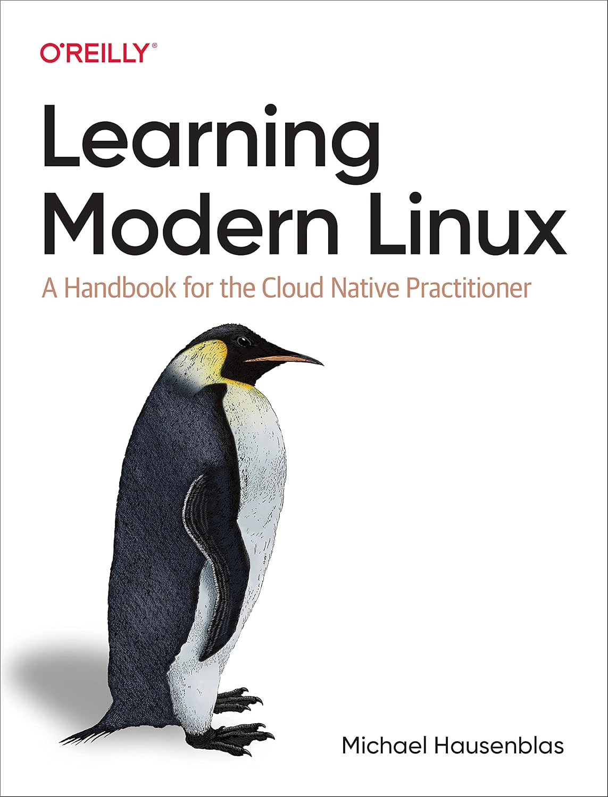
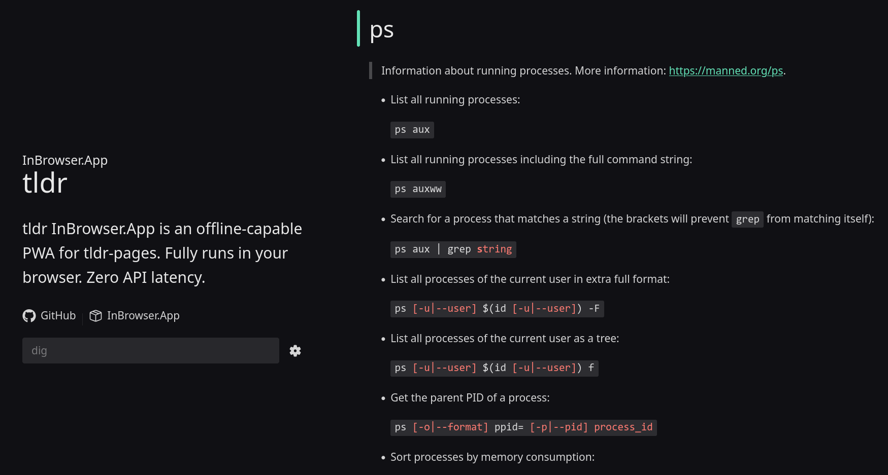
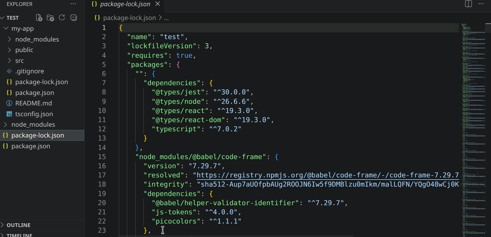

На отих 2-х тижнях я думав, що все зроблю через Ютуб туторіяли + практика, аби прискорити процес навчання новими інструментами, але, так як Ютуб не все має, що мені може допомогти, я вирішив читати книжки теж. Це хоч уповільнило процес, але реально дало більше ніж те, що в Інтернеті пишуть. На жаль, я сильно захворів на другому тижні, тому прийшлося якось балансувати між інститутом і отим навчанням.
В загалому, я сказав би, що прогрес доволі таки видний, бо наприклад не думав, що термінал стане колись для мене більш інтуїтивним ніж ті самі програми з GUI. Я вирішив адаптовуватися до Vimа(як редактор коду, як розширення у Vscodium, як адон в браузері і тд, якщо можливо), бо відчуваю, що клавіятурою я буду користуватися досить таки часто. Я все більше починаю розуміти логи, а також, що варто писати для перевірки чогось. Але все одно є моменти, які мені все одно незрозумілі. Я думаю, що просто варто якоїсь реальної практики, аби побачити патерни в реальності.
Я вирішив створити цей сайт, аби викладувати тут інформацію про мій розвиток. Зірки означають як я щось зрозумів на даний момент, однак мала кількість не означає те, що все погано і тд. Просто хочеться більш об'єктивно себе оцінювати.
Я вирішив швидко спробувати вивчити Лінукса через Ютуб туторіяли, але, на жаль, там тільки про базові команди в терміналі по факту говорять і все… Тому вирішив читати книжку „Learning Modern Linux: A Handbook for the Cloud Native Practitioner” автора Michael Hausenblas(від видання „O'Reilly”), і гадаю, що ця книжка це одна з найкращих речей для вивчення того, що можна на Лінуксі робити! Я ще читаю її, але вона вже дала мені певні важливі знання.

Наприклад те, що ядро(чи кернел) Лінукса є ніби „містком” між апаратурою і користувацьким простором, а основний інтерфейс то системні виклики(syscalls), які по факту дають весь потрібний функціонал. Також там було написано про eBPF і їхнім сайтом: https://ebpf.io/, але я тут не особо зрозумів для чого воно треба.
А от після прочитання про оболонок, я став бачити їх під іншим кутом: наприклад за допомогою дескрипторів stdin, stdout й stderr можна зробити так, аби оболонка виводила щось у файл, а не на екран. Я вирішив встановити собі оболонку fish shell, мультиплексор tmux. Для Python і JS думаю спробувати Oil Shell. Самі команди тепер стали мати для мене реальний сенс, а не просто Ctrl + C → Ctrl + V з Інтернету десь. Зрозумів, що можна встановити кращі команди від Modern UNIX такі як eza на заміну ls, bat на заміну cat і тд. Зрозумів, що в tmuxі префікс з комбінацією клавіш Ctrl + B варто замінити на одну клавішу, наприклад як автор на home замінив, бо неї дуже часто прийдеться користуватися. Я ще, до речі, не очікував, що команда which виявляється не належить POSIX, а отже, ця команда не завжди доступна, а її аналогом є command -v. Навчився програмувати bash скрипти. Загалом, я ніби розумію, що наприклад роблять команди і прапорці, але тяжко уявити те, де в реальності я зможу тим користуватися…
Також дізнався(ну це вже з Ютуб коментаря), що існує ком'юніті аналог для команди man, який називається tldr, аби швидше розуміти що робить та чи інша команда. Воно ще й має свій сайт(але я все одно люблю локальним користуватися), тому наприклад команда ps для переглядання процесів виглядає ось так:

Щодо розділу з дозволами, то в принципі все було зрозуміло, окрім seccomp.
Щодо розділу про файлові системи, то не очікував, що Лінукс має псевдофайлові системи /proc і /sys. Не до кінця зрозумів як працює CoW. В загалому, хочу сюди повернутися, бо не всі моменти зрозумів.
Я зараз в розділі про контейнери і систему ініціялізації systemd. Поки що все ніби зрозуміло.
Якщо говорити коротко, то я відчуваю, що знання то маю, але потребую якоїсь конкретної практики, аби „пальці запам'ятали”. Якщо треба ще щось змінити, як-от комбінації клавіш, то я можу змінити.
Я вирішив спробувати Докера, і в принципі я сказав би, що інструмент доволі таки легкий до використання(якщо я точно зрозумів, що то є). Синтаксис нагадує MySQL + команди з термінала, а процес створення контейнерів виглядає ось так: створення докер файлу → створення image(не знаю як краще то перекласти) → створення контейнера. Файл .dockerignore походу працює так само як і .gitignore. Ще я походу зрозумів отих коментаторів, які казали про те, що якщо якась прога має залежності, а система оновилася, то варто докеризувати її, аби вона працювала на новішій машині. Я не зрозумів те, чи можна наприклад написати прогу на Лінуксі й передати її через контейнеризацію на Віндовс і навпаки, бо, з однієї сторони, суть контейнерів полягає на тому, аби щось з однієї машини можна було передати іншій машині і все буде працювати(раніше це було для сисадмінів, а тепер — для розробників теж), але, з іншої сторони, Вінда має своє ядро, тому це що, треба буде на Лінуксі мати "Віндовс аналог WSLа"?
Так як в польському технікумі я вже мав MySQL, я думав спробувати подивитися на PostgreSQL і чим він відрізняється від першого. Але хвороба збила мене з планів сильно, тому треба буде повернутися… Я хотів би спробувати використовувати термінал і nginx з базами даних, бо до цього був тільки в MS Access і XAMPP(обидва як через GUI, так і через код).
Щодо git, то пам'ятаю, що ми мали то колись в українському технікумі як практичну роботу, однак я не користувався тим потім, бо мав звичку створювати локальні папки як версії у себе на компі і все. Тепер, коли термінал став мені „своїм” так би мовити, адаптуюся до того, аби користуватися gitом. Я так зрозумів, що в Git і Github є різні команди як в терміналі. Є команди, які є частовживаними як-от push, pull, commit, init, add і тд. Файл .gitignore потрібен, аби зберігати якісь приватні дані. Також я почув про таку пораду:„не роби багато гілок, а роби багато комітів”, і її суть в тому, що якщо маєш багато малих комітів, то легше баг знайти і, якщо станеться якийсь форс-мажор, то легше повернутися назад. Github то по факту Git, тільки як сайт я так зрозумів. Ще побачив багато інших команд і прапорців, але ними ще не користувався, бо трохи складно уявити, де я буду ними користуватися, тому гадаю, що варто просто використовувати частовживані, а оті — тоді, коли буде потреба.
Хоч nginx в плани на оті 2 тижні не входив, я вирішив спробувати навчитися користуватися nginx замість XAMPP, тому, для адаптації, я вирішив спробувати із nginxа зробити щось подібного на XAMPP, але через термінал. Я вирішив йти за напрямком одного ютубера з певними змінами. Ось як воно було встановлено:
sudo apt updatesudo apt upgradesudo apt install nginxsudo ufw allow "Nginx Full"sudo apt install mariadb-serversudo mariadb-secure-installationsudo apt install php-fpm php-mysql php-gd php-bcmath php-cli php-curl php-mbstring php-zip php-xmlls /run/php/sudo nano /etc/nginx/sites-enabled/defaultlocation / {
try_files $uri $uri/ =404;
autoindex on;
}
location ~ \.php$ {
include snippets/fastcgi-php.conf;
fastcgi_pass unix:/run/php/php8.3-fpm.sock;
}sudo nginx -t
sudo systemctl reload nginxsudo chown -R $USER:www-data /var/www/html
sudo chmod -R 775 /var/www/html
ln -s /var/www/html ~/htdocsВирішив спробувати це, так би мовити, доповнення до JS. За синтаксисом нагадало мені Object Pascal на IDE під назвою „Lazarus”, коли в нашій школі ще була застаріла програма навчання. Дякуючи типізації, я можу швидше знаходити баги в коді, тому фіг його зна чому відразу в JS такого нема. А якщо я матиму клопоти з вибором типу, то any це мій рятівник по факту! Шкода, що напряму .ts файли не можна використовувати наприклад в розробці сайтів, адже їх постійно треба компілювати в .js… В загалому, дуже сподобалося, тому якщо десь матиму справу з JS, то розумію де варто почати, однак розумію, що, можливо, я пропустив якісь деталі, тому думаю потім повернутися сюди.
Так як я вирішив більше сконцентруватися на Лінуксі, Докері та Ґіті, то на жаль, я не зміг зрозуміти що мені робити з Реактом… Я просто, згідно з туторіялом, скачав багато файлів, використовуючи це:
npx create-react-app my-app --template typescriptnpm install --save typescript @types/node @types/react @types/react-dom @types/jest
Почуваюся трохи розгубленим тут… Думаю, що варто пізніше повернутися до цього пізніше.